-
verifyingBatteryCapacityFilterFunctionality_Mobile_22-39-09
10:39:22 PM / 00:02:32:727 Fail
verifyingBatteryCapacityFilterFunctionality_Mobile_22-39-09
09.28.2026 10:39:22 PM 09.28.2026 10:41:55 PM 00:02:32:727 · #test-id=1Status Timestamp Details Info 10:39:22 PM Test Input Parameter: Mobile Fail 10:41:55 PM Info 10:41:55 PM 📂 Logs: Info 10:41:55 PM 📄 verifyingBatteryCapacityFilterFunctionality_Mobile_22-39-09.log Info 10:41:55 PM 📸 Screenshots: Info 10:41:55 PM 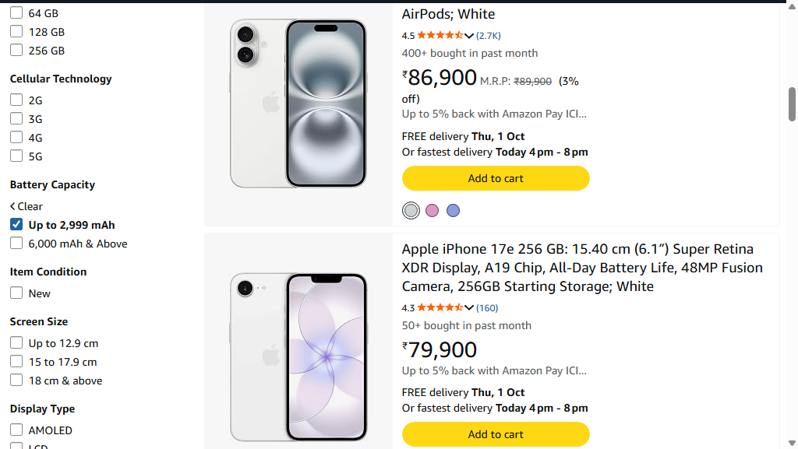
-
verifyingDisplaySizeFilterFunctionality_Mobile_22-39-09
10:39:22 PM / 00:04:42:245 Fail
verifyingDisplaySizeFilterFunctionality_Mobile_22-39-09
09.28.2026 10:39:22 PM 09.28.2026 10:44:05 PM 00:04:42:245 · #test-id=2Status Timestamp Details Info 10:39:22 PM Test Input Parameter: Mobile Fail 10:44:05 PM Info 10:44:05 PM 📂 Logs: Info 10:44:05 PM 📄 verifyingDisplaySizeFilterFunctionality_Mobile_22-39-09.log Info 10:44:05 PM 📸 Screenshots: Info 10:44:05 PM 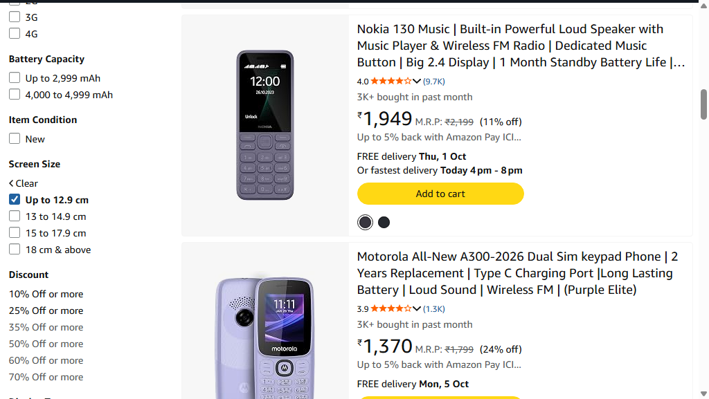
Info 10:44:05 PM 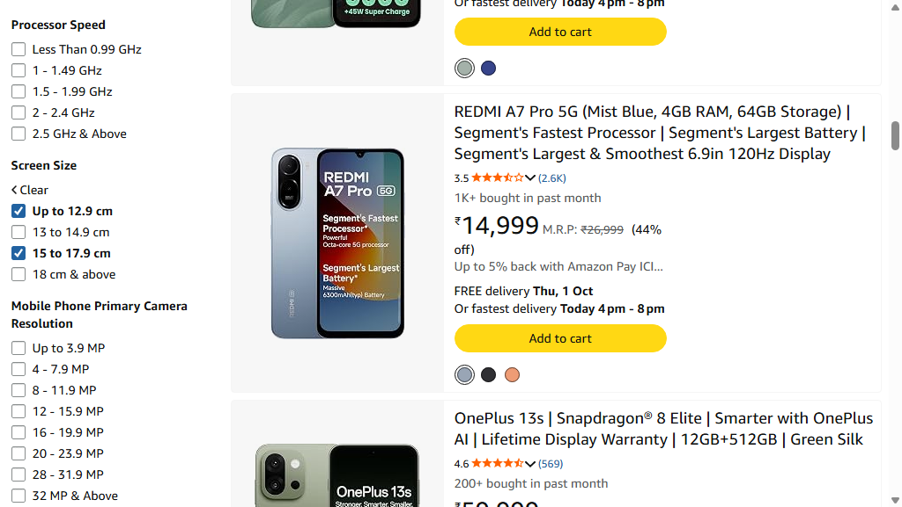
-
verifyingDiscountFilterFunctionality_Mobile_22-39-09
10:39:24 PM / 00:10:46:451 Fail
verifyingDiscountFilterFunctionality_Mobile_22-39-09
09.28.2026 10:39:24 PM 09.28.2026 10:50:10 PM 00:10:46:451 · #test-id=3Status Timestamp Details Info 10:39:24 PM Test Input Parameter: Mobile Fail 10:50:10 PM Info 10:50:10 PM 📂 Logs: Info 10:50:10 PM 📄 verifyingDiscountFilterFunctionality_Mobile_22-39-09.log Info 10:50:10 PM 📸 Screenshots: Info 10:50:10 PM 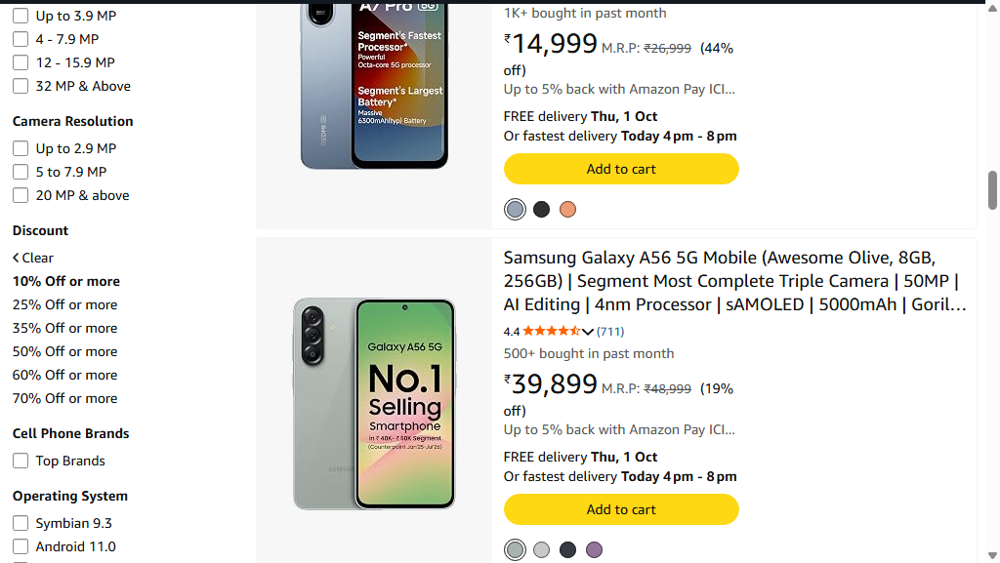
Info 10:50:10 PM 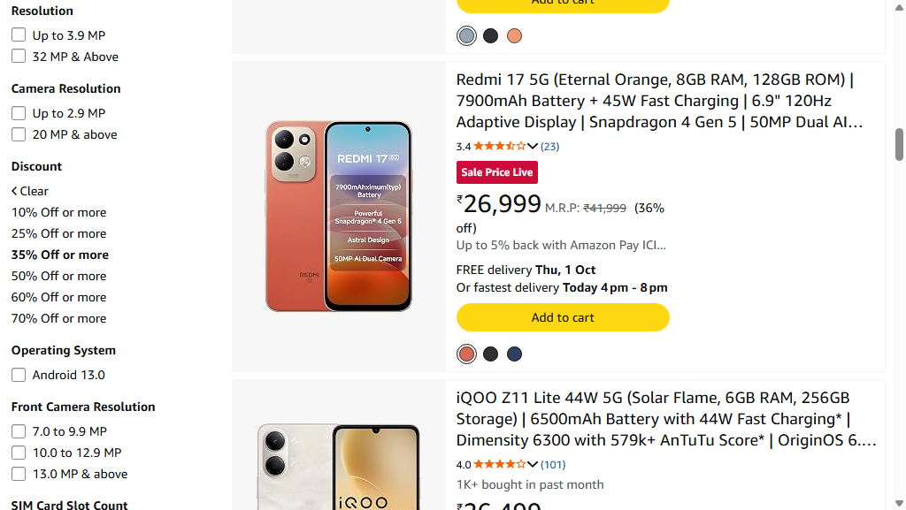
Info 10:50:10 PM 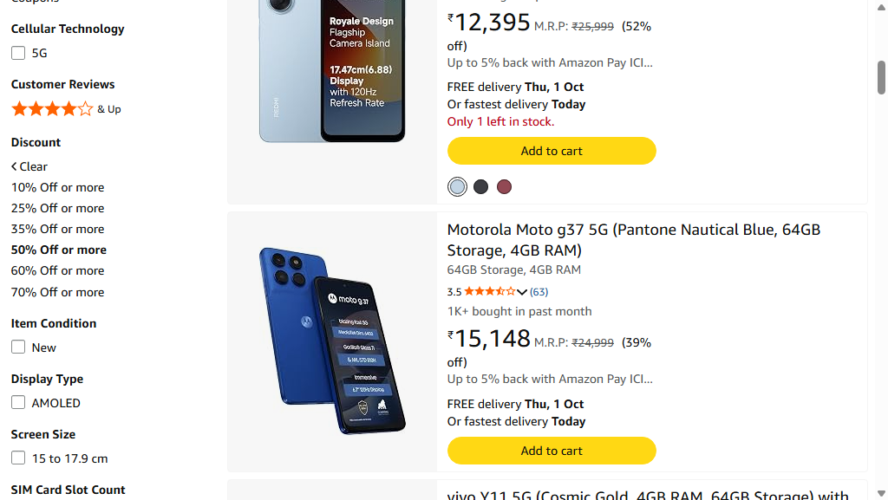
Info 10:50:10 PM 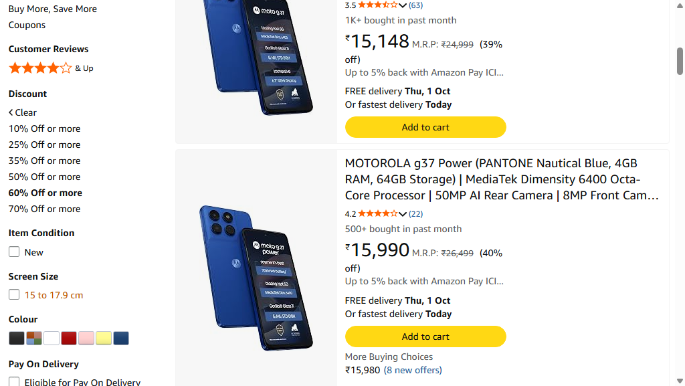
Info 10:50:10 PM 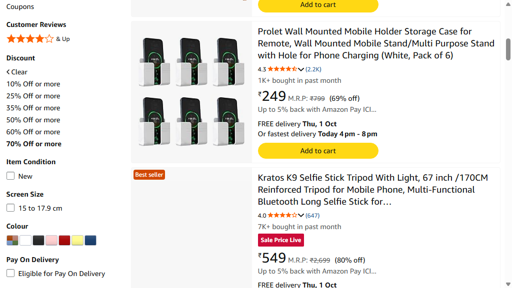
-
verifyingBatteryCapacityFilterFunctionality_Laptop_22-41-56
10:41:58 PM / 00:00:13:232 Pass
verifyingBatteryCapacityFilterFunctionality_Laptop_22-41-56
09.28.2026 10:41:58 PM 09.28.2026 10:42:11 PM 00:00:13:232 · #test-id=4Status Timestamp Details Info 10:41:58 PM Test Input Parameter: Laptop Pass 10:42:11 PM Test Passed Info 10:42:11 PM 📂 Logs: Info 10:42:11 PM 📄 verifyingBatteryCapacityFilterFunctionality_Laptop_22-41-56.log -
verifyingBatteryCapacityFilterFunctionality_Tablet_22-42-12
10:42:17 PM / 00:00:05:582 Pass
verifyingBatteryCapacityFilterFunctionality_Tablet_22-42-12
09.28.2026 10:42:17 PM 09.28.2026 10:42:22 PM 00:00:05:582 · #test-id=5Status Timestamp Details Info 10:42:17 PM Test Input Parameter: Tablet Pass 10:42:22 PM Test Passed Info 10:42:22 PM 📂 Logs: Info 10:42:22 PM 📄 verifyingBatteryCapacityFilterFunctionality_Tablet_22-42-12.log -
verifyingDisplayTypeFilterFunctionality_Mobile_22-42-23
10:42:24 PM / 00:01:19:878 Fail
verifyingDisplayTypeFilterFunctionality_Mobile_22-42-23
09.28.2026 10:42:24 PM 09.28.2026 10:43:44 PM 00:01:19:878 · #test-id=6Status Timestamp Details Info 10:42:24 PM Test Input Parameter: Mobile Fail 10:43:44 PM Info 10:43:44 PM 📂 Logs: Info 10:43:44 PM 📄 verifyingDisplayTypeFilterFunctionality_Mobile_22-42-23.log Info 10:43:44 PM 📸 Screenshots: Info 10:43:44 PM 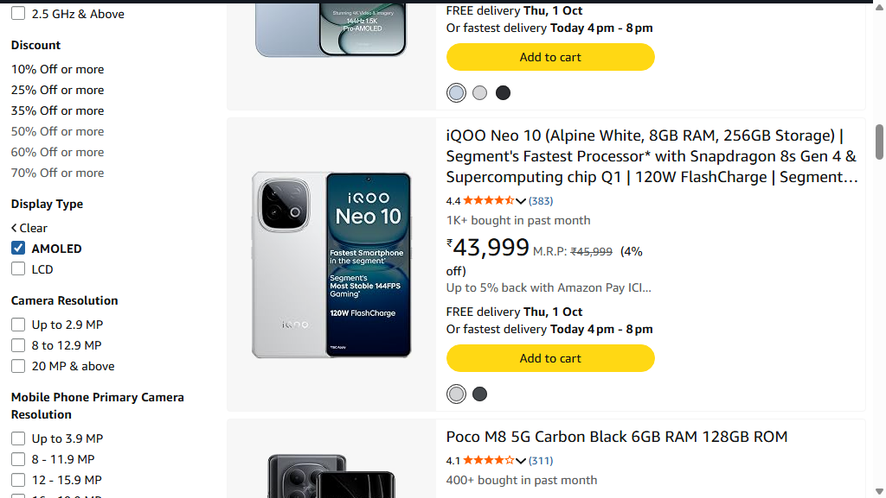
-
verifyingDisplayTypeFilterFunctionality_Laptop_22-43-45
10:43:47 PM / 00:04:34:314 Fail
verifyingDisplayTypeFilterFunctionality_Laptop_22-43-45
09.28.2026 10:43:47 PM 09.28.2026 10:48:22 PM 00:04:34:314 · #test-id=7Status Timestamp Details Info 10:43:47 PM Test Input Parameter: Laptop Fail 10:48:22 PM Info 10:48:22 PM 📂 Logs: Info 10:48:22 PM 📄 verifyingDisplayTypeFilterFunctionality_Laptop_22-43-45.log Info 10:48:22 PM 📸 Screenshots: Info 10:48:22 PM 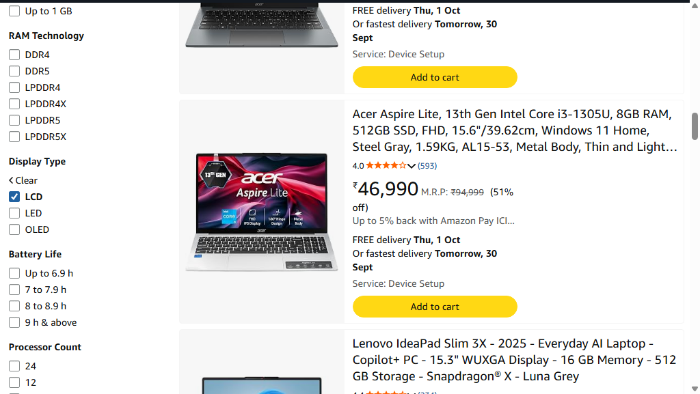
Info 10:48:22 PM 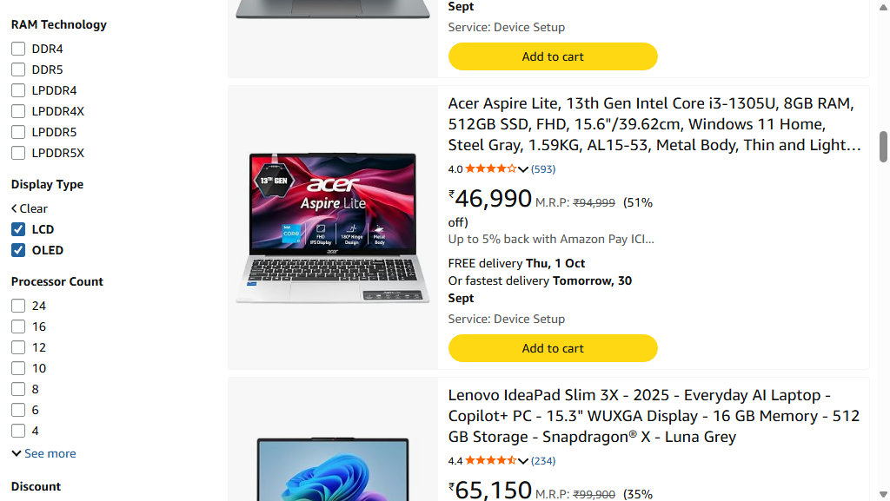
-
verifyingDisplaySizeFilterFunctionality_Laptop_22-44-05
10:44:08 PM / 00:13:01:211 Fail
verifyingDisplaySizeFilterFunctionality_Laptop_22-44-05
09.28.2026 10:44:08 PM 09.28.2026 10:57:09 PM 00:13:01:211 · #test-id=8Status Timestamp Details Info 10:44:08 PM Test Input Parameter: Laptop Fail 10:57:09 PM Info 10:57:09 PM 📂 Logs: Info 10:57:09 PM 📄 verifyingDisplaySizeFilterFunctionality_Laptop_22-44-05.log Info 10:57:09 PM 📸 Screenshots: Info 10:57:09 PM 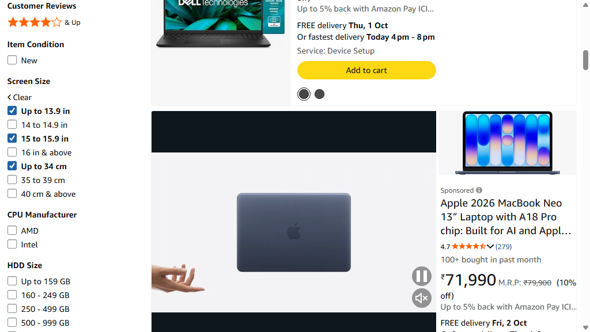
Info 10:57:09 PM 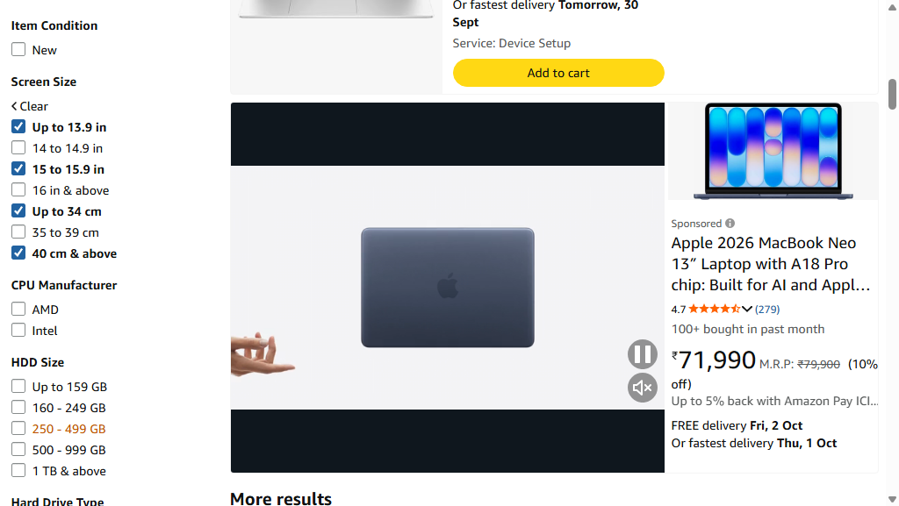
Info 10:57:09 PM 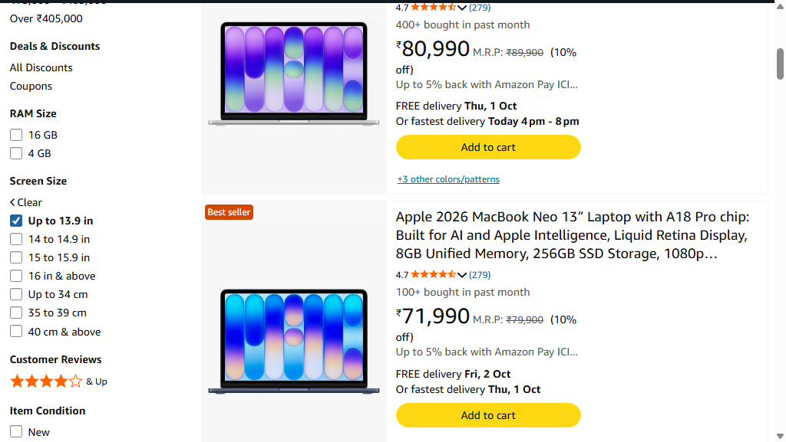
Info 10:57:09 PM 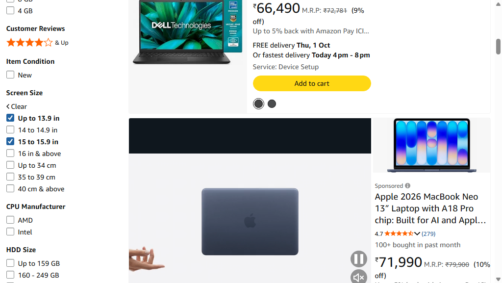
-
verifyingDisplayTypeFilterFunctionality_Tablet_22-48-23
10:48:26 PM / 00:07:00:604 Fail
verifyingDisplayTypeFilterFunctionality_Tablet_22-48-23
09.28.2026 10:48:26 PM 09.28.2026 10:55:26 PM 00:07:00:604 · #test-id=9Status Timestamp Details Info 10:48:26 PM Test Input Parameter: Tablet Fail 10:55:26 PM Info 10:55:26 PM 📂 Logs: Info 10:55:26 PM 📄 verifyingDisplayTypeFilterFunctionality_Tablet_22-48-23.log Info 10:55:26 PM 📸 Screenshots: Info 10:55:26 PM 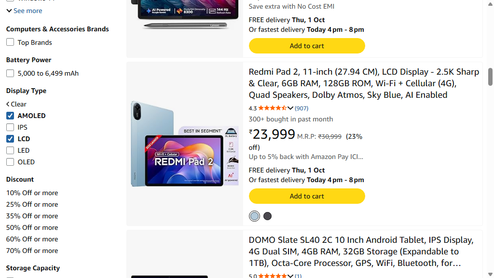
Info 10:55:26 PM 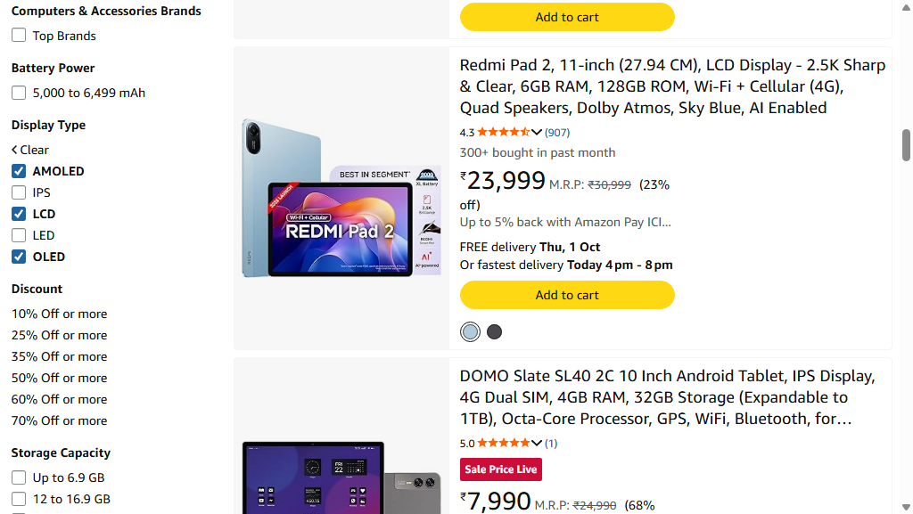
Info 10:55:26 PM 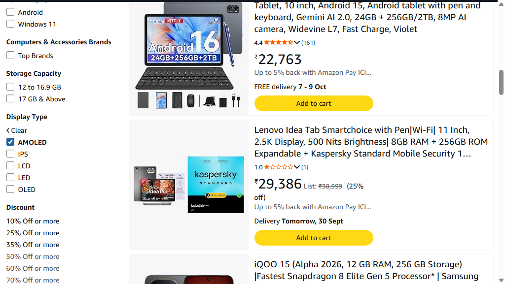
-
verifyingDiscountFilterFunctionality_Laptop_22-50-11
10:50:14 PM / 00:06:42:021 Fail
verifyingDiscountFilterFunctionality_Laptop_22-50-11
09.28.2026 10:50:14 PM 09.28.2026 10:56:56 PM 00:06:42:021 · #test-id=10Status Timestamp Details Info 10:50:14 PM Test Input Parameter: Laptop Fail 10:56:56 PM Info 10:56:56 PM 📂 Logs: Info 10:56:56 PM 📄 verifyingDiscountFilterFunctionality_Laptop_22-50-11.log Info 10:56:56 PM 📸 Screenshots: Info 10:56:56 PM 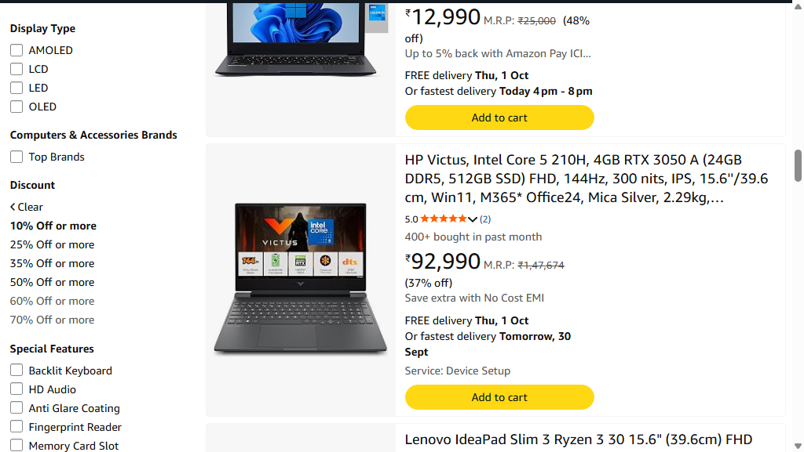
Info 10:56:56 PM 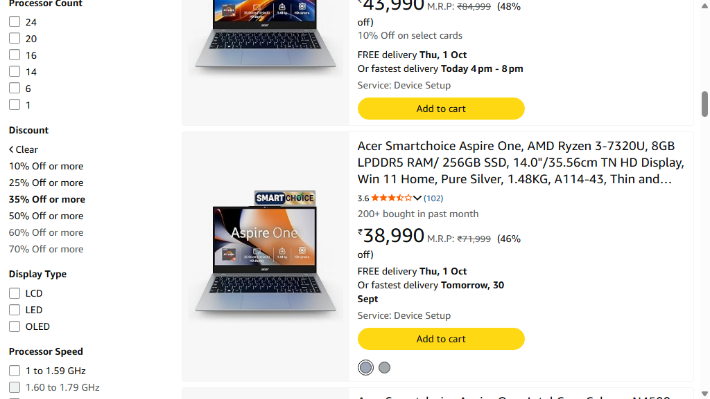
Info 10:56:56 PM 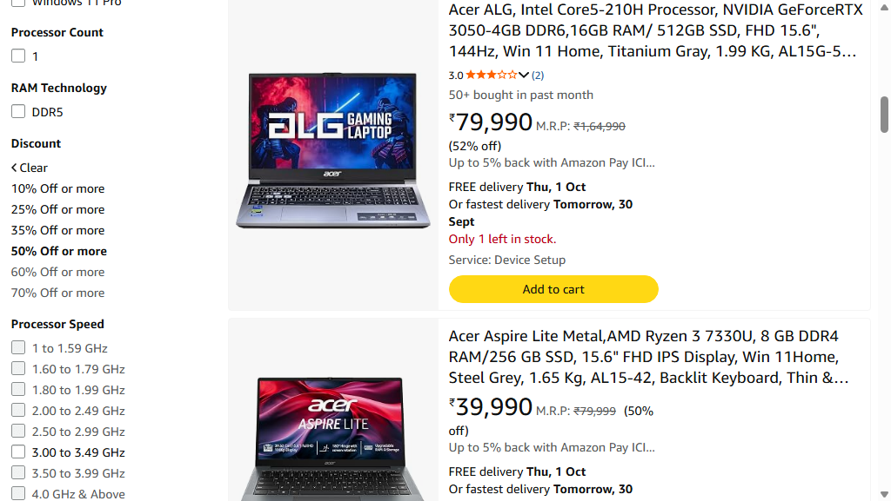
-
verifyingFreeDeliveryFilterFunctionality_Mobile_22-55-28
10:55:30 PM / 00:00:09:286 Pass
verifyingFreeDeliveryFilterFunctionality_Mobile_22-55-28
09.28.2026 10:55:30 PM 09.28.2026 10:55:39 PM 00:00:09:286 · #test-id=11Status Timestamp Details Info 10:55:30 PM Test Input Parameter: Mobile Pass 10:55:39 PM Test Passed Info 10:55:39 PM 📂 Logs: Info 10:55:39 PM 📄 verifyingFreeDeliveryFilterFunctionality_Mobile_22-55-28.log Info 10:55:39 PM 📸 Screenshots: Info 10:55:39 PM -
verifyingFreeDeliveryFilterFunctionality_Laptop_22-55-40
10:55:41 PM / 00:00:07:296 Pass
verifyingFreeDeliveryFilterFunctionality_Laptop_22-55-40
09.28.2026 10:55:41 PM 09.28.2026 10:55:49 PM 00:00:07:296 · #test-id=12Status Timestamp Details Info 10:55:41 PM Test Input Parameter: Laptop Pass 10:55:49 PM Test Passed Info 10:55:49 PM 📂 Logs: Info 10:55:49 PM 📄 verifyingFreeDeliveryFilterFunctionality_Laptop_22-55-40.log Info 10:55:49 PM 📸 Screenshots: Info 10:55:49 PM -
verifyingFreeDeliveryFilterFunctionality_Tablet_22-55-49
10:55:51 PM / 00:00:09:173 Pass
verifyingFreeDeliveryFilterFunctionality_Tablet_22-55-49
09.28.2026 10:55:51 PM 09.28.2026 10:56:00 PM 00:00:09:173 · #test-id=13Status Timestamp Details Info 10:55:51 PM Test Input Parameter: Tablet Pass 10:56:00 PM Test Passed Info 10:56:00 PM 📂 Logs: Info 10:56:00 PM 📄 verifyingFreeDeliveryFilterFunctionality_Tablet_22-55-49.log Info 10:56:00 PM 📸 Screenshots: Info 10:56:00 PM -
verifyingGetItByTodayFilterFunctionality_Mobile_22-56-01
10:56:04 PM / 00:00:07:503 Pass
verifyingGetItByTodayFilterFunctionality_Mobile_22-56-01
09.28.2026 10:56:04 PM 09.28.2026 10:56:11 PM 00:00:07:503 · #test-id=14Status Timestamp Details Info 10:56:04 PM Test Input Parameter: Mobile Pass 10:56:11 PM Test Passed Info 10:56:11 PM 📂 Logs: Info 10:56:11 PM 📄 verifyingGetItByTodayFilterFunctionality_Mobile_22-56-01.log Info 10:56:11 PM 📸 Screenshots: Info 10:56:11 PM Info 10:56:11 PM Info 10:56:11 PM 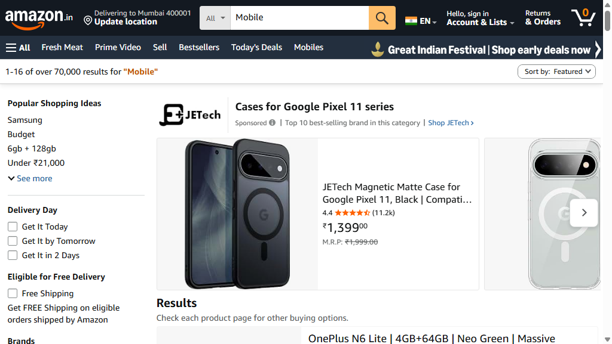
Info 10:56:11 PM -
verifyingGetItByTodayFilterFunctionality_Laptop_22-56-11
10:56:13 PM / 00:00:08:755 Pass
verifyingGetItByTodayFilterFunctionality_Laptop_22-56-11
09.28.2026 10:56:13 PM 09.28.2026 10:56:22 PM 00:00:08:755 · #test-id=15Status Timestamp Details Info 10:56:13 PM Test Input Parameter: Laptop Pass 10:56:22 PM Test Passed Info 10:56:22 PM 📂 Logs: Info 10:56:22 PM 📄 verifyingGetItByTodayFilterFunctionality_Laptop_22-56-11.log Info 10:56:22 PM 📸 Screenshots: Info 10:56:22 PM Info 10:56:22 PM Info 10:56:22 PM Info 10:56:22 PM -
verifyingGetItByTodayFilterFunctionality_Tablet_22-56-22
10:56:23 PM / 00:00:07:479 Pass
verifyingGetItByTodayFilterFunctionality_Tablet_22-56-22
09.28.2026 10:56:23 PM 09.28.2026 10:56:31 PM 00:00:07:479 · #test-id=16Status Timestamp Details Info 10:56:23 PM Test Input Parameter: Tablet Pass 10:56:31 PM Test Passed Info 10:56:31 PM 📂 Logs: Info 10:56:31 PM 📄 verifyingGetItByTodayFilterFunctionality_Tablet_22-56-22.log Info 10:56:31 PM 📸 Screenshots: Info 10:56:31 PM Info 10:56:31 PM Info 10:56:31 PM 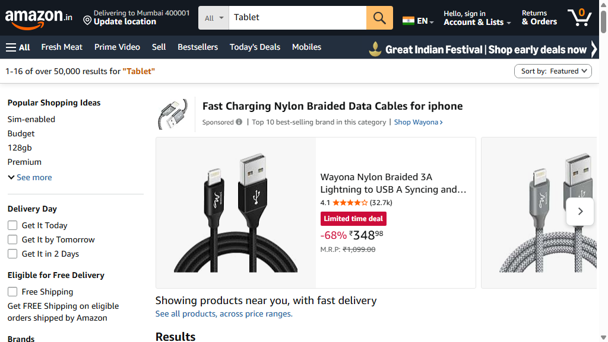
Info 10:56:31 PM -
verifyingGetItByTomorrowFilterFunctionality_Mobile_22-56-31
10:56:33 PM / 00:00:08:328 Pass
verifyingGetItByTomorrowFilterFunctionality_Mobile_22-56-31
09.28.2026 10:56:33 PM 09.28.2026 10:56:41 PM 00:00:08:328 · #test-id=17Status Timestamp Details Info 10:56:33 PM Test Input Parameter: Mobile Pass 10:56:41 PM Test Passed Info 10:56:41 PM 📂 Logs: Info 10:56:41 PM 📄 verifyingGetItByTomorrowFilterFunctionality_Mobile_22-56-31.log Info 10:56:41 PM 📸 Screenshots: Info 10:56:41 PM 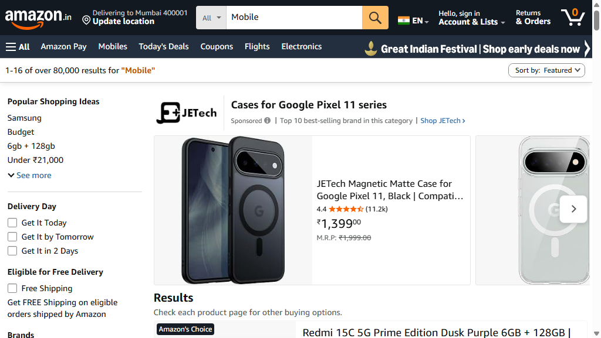
Info 10:56:41 PM 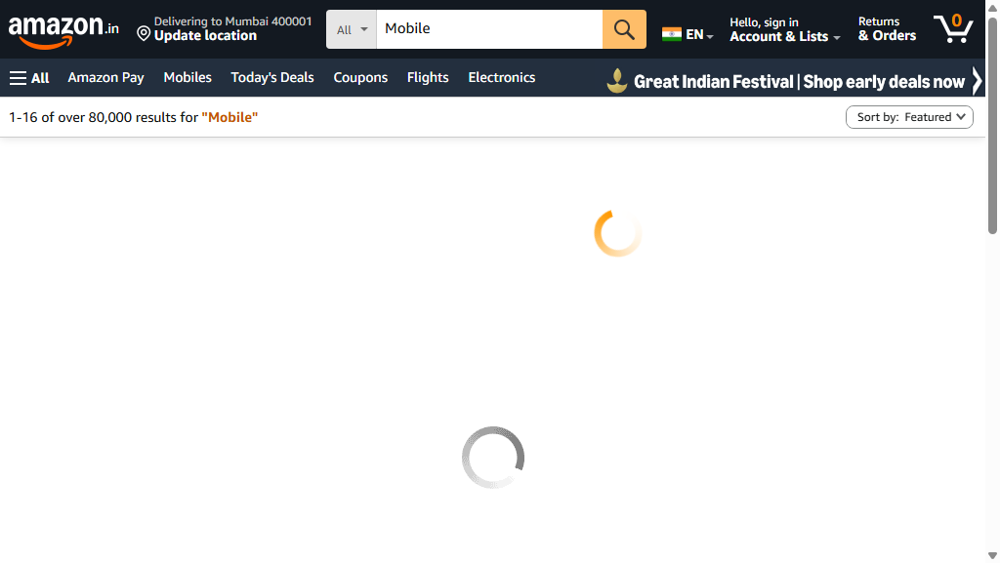
-
verifyingGetItByTomorrowFilterFunctionality_Laptop_22-56-41
10:56:43 PM / 00:00:07:973 Pass
verifyingGetItByTomorrowFilterFunctionality_Laptop_22-56-41
09.28.2026 10:56:43 PM 09.28.2026 10:56:51 PM 00:00:07:973 · #test-id=18Status Timestamp Details Info 10:56:43 PM Test Input Parameter: Laptop Pass 10:56:51 PM Test Passed Info 10:56:51 PM 📂 Logs: Info 10:56:51 PM 📄 verifyingGetItByTomorrowFilterFunctionality_Laptop_22-56-41.log Info 10:56:51 PM 📸 Screenshots: Info 10:56:51 PM Info 10:56:51 PM -
verifyingGetItByTomorrowFilterFunctionality_Tablet_22-56-51
10:56:53 PM / 00:00:09:765 Pass
verifyingGetItByTomorrowFilterFunctionality_Tablet_22-56-51
09.28.2026 10:56:53 PM 09.28.2026 10:57:02 PM 00:00:09:765 · #test-id=19Status Timestamp Details Info 10:56:53 PM Test Input Parameter: Tablet Pass 10:57:02 PM Test Passed Info 10:57:02 PM 📂 Logs: Info 10:57:02 PM 📄 verifyingGetItByTomorrowFilterFunctionality_Tablet_22-56-51.log Info 10:57:02 PM 📸 Screenshots: Info 10:57:02 PM Info 10:57:02 PM -
verifyingDiscountFilterFunctionality_Tablet_22-56-57
10:57:00 PM / 00:13:02:691 Fail
verifyingDiscountFilterFunctionality_Tablet_22-56-57
09.28.2026 10:57:00 PM 09.28.2026 11:10:02 PM 00:13:02:691 · #test-id=20Status Timestamp Details Info 10:57:00 PM Test Input Parameter: Tablet Fail 11:10:02 PM Info 11:10:02 PM 📂 Logs: Info 11:10:02 PM 📄 verifyingDiscountFilterFunctionality_Tablet_22-56-57.log Info 11:10:02 PM 📸 Screenshots: Info 11:10:02 PM 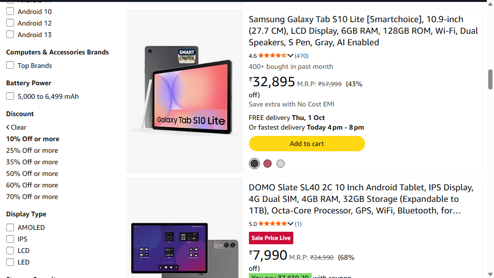
Info 11:10:02 PM 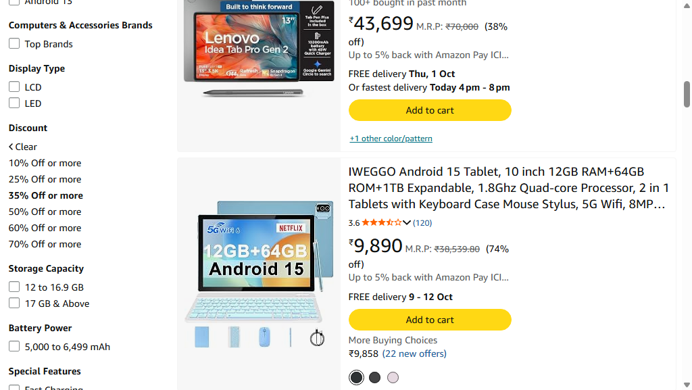
Info 11:10:02 PM 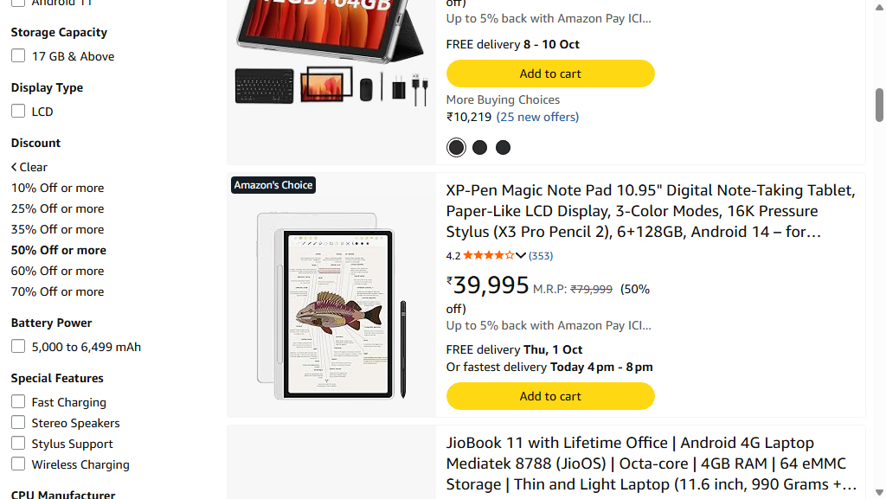
Info 11:10:02 PM 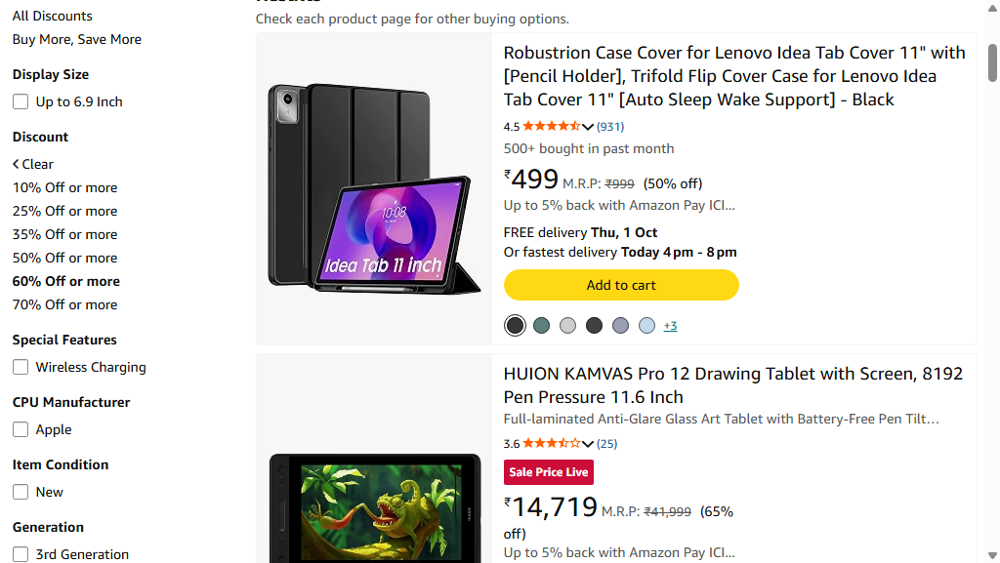
Info 11:10:02 PM 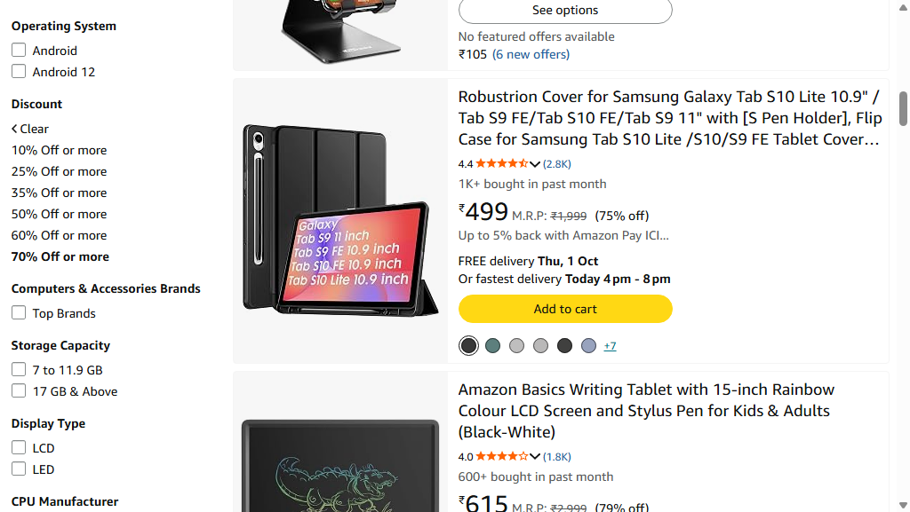
-
verifyingGetItIn2DaysFilterFunctionality_Mobile_22-57-03
10:57:04 PM / 00:00:08:757 Pass
verifyingGetItIn2DaysFilterFunctionality_Mobile_22-57-03
09.28.2026 10:57:04 PM 09.28.2026 10:57:13 PM 00:00:08:757 · #test-id=21Status Timestamp Details Info 10:57:04 PM Test Input Parameter: Mobile Pass 10:57:13 PM Test Passed Info 10:57:13 PM 📂 Logs: Info 10:57:13 PM 📄 verifyingGetItIn2DaysFilterFunctionality_Mobile_22-57-03.log Info 10:57:13 PM 📸 Screenshots: Info 10:57:13 PM 
Info 10:57:13 PM -
verifyingDisplaySizeFilterFunctionality_Tablet_22-57-10
10:57:13 PM / 00:00:08:640 Pass
verifyingDisplaySizeFilterFunctionality_Tablet_22-57-10
09.28.2026 10:57:13 PM 09.28.2026 10:57:22 PM 00:00:08:640 · #test-id=22Status Timestamp Details Info 10:57:13 PM Test Input Parameter: Tablet Pass 10:57:22 PM Test Passed Info 10:57:22 PM 📂 Logs: Info 10:57:22 PM 📄 verifyingDisplaySizeFilterFunctionality_Tablet_22-57-10.log -
verifyingGetItIn2DaysFilterFunctionality_Laptop_22-57-14
10:57:16 PM / 00:00:09:532 Pass
verifyingGetItIn2DaysFilterFunctionality_Laptop_22-57-14
09.28.2026 10:57:16 PM 09.28.2026 10:57:25 PM 00:00:09:532 · #test-id=23Status Timestamp Details Info 10:57:16 PM Test Input Parameter: Laptop Pass 10:57:25 PM Test Passed Info 10:57:25 PM 📂 Logs: Info 10:57:25 PM 📄 verifyingGetItIn2DaysFilterFunctionality_Laptop_22-57-14.log Info 10:57:25 PM 📸 Screenshots: Info 10:57:25 PM 
Info 10:57:25 PM -
verifyingMobilePhonePrimaryCameraResolutionFilterFunctionality_Mobile_22-57-22
10:57:24 PM / 00:08:19:367 Fail
verifyingMobilePhonePrimaryCameraResolutionFilterFunctionality_Mobile_22-57-22
09.28.2026 10:57:24 PM 09.28.2026 11:05:43 PM 00:08:19:367 · #test-id=24Status Timestamp Details Info 10:57:24 PM Test Input Parameter: Mobile Fail 11:05:43 PM Info 11:05:43 PM 📂 Logs: Info 11:05:43 PM 📄 verifyingMobilePhonePrimaryCameraResolutionFilterFunctionality_Mobile_22-57-22.log Info 11:05:43 PM 📸 Screenshots: Info 11:05:43 PM 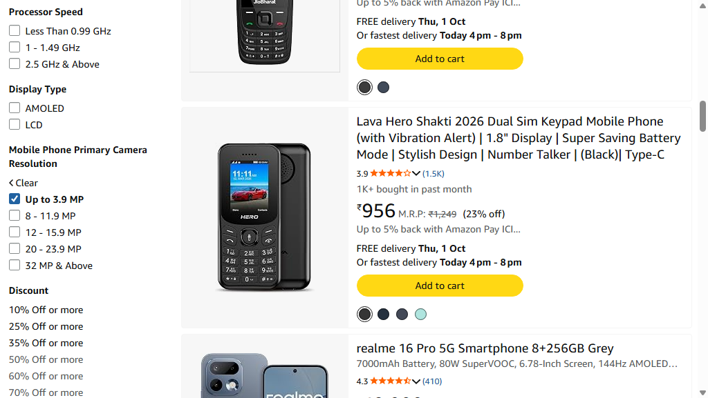
Info 11:05:43 PM 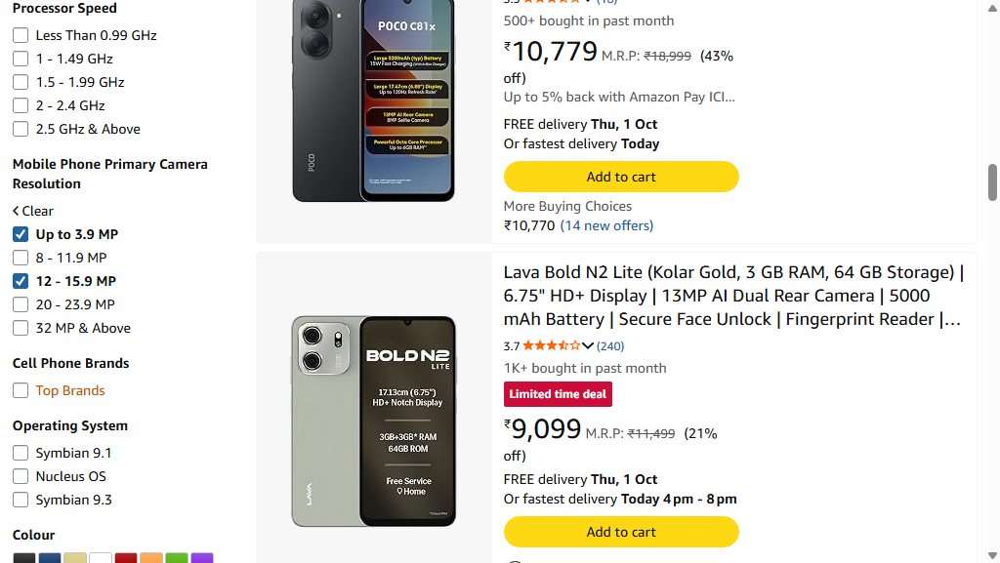
Info 11:05:43 PM 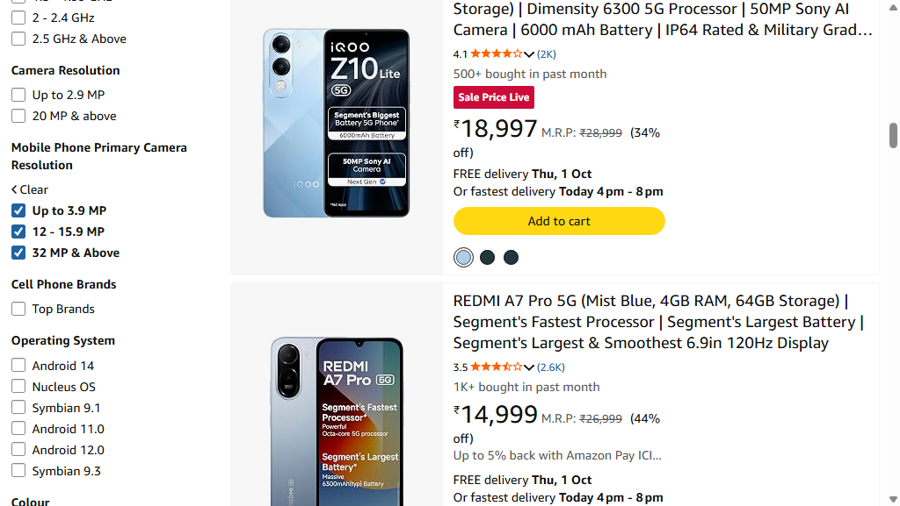
-
verifyingGetItIn2DaysFilterFunctionality_Tablet_22-57-26
10:57:28 PM / 00:00:16:636 Pass
verifyingGetItIn2DaysFilterFunctionality_Tablet_22-57-26
09.28.2026 10:57:28 PM 09.28.2026 10:57:45 PM 00:00:16:636 · #test-id=25Status Timestamp Details Info 10:57:28 PM Test Input Parameter: Tablet Pass 10:57:44 PM Test Passed Info 10:57:44 PM 📂 Logs: Info 10:57:44 PM 📄 verifyingGetItIn2DaysFilterFunctionality_Tablet_22-57-26.log Info 10:57:45 PM 📸 Screenshots: Info 10:57:45 PM 
-
verifyingOperatingSystemVersionFilterFunctionality_Mobile_22-57-45
10:57:47 PM / 00:04:48:941 Fail
verifyingOperatingSystemVersionFilterFunctionality_Mobile_22-57-45
09.28.2026 10:57:47 PM 09.28.2026 11:02:36 PM 00:04:48:941 · #test-id=26Status Timestamp Details Info 10:57:47 PM Test Input Parameter: Mobile Fail 11:02:36 PM Info 11:02:36 PM 📂 Logs: Info 11:02:36 PM 📄 verifyingOperatingSystemVersionFilterFunctionality_Mobile_22-57-45.log Info 11:02:36 PM 📸 Screenshots: Info 11:02:36 PM 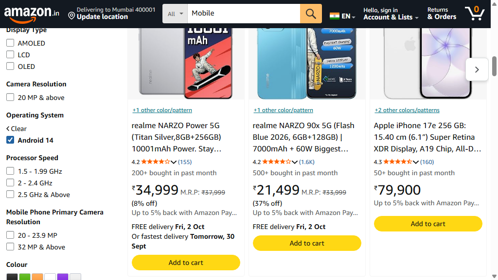
-
verifyingOperatingSystemVersionFilterFunctionality_Laptop_23-02-37
11:02:40 PM / 00:04:41:405 Fail
verifyingOperatingSystemVersionFilterFunctionality_Laptop_23-02-37
09.28.2026 11:02:40 PM 09.28.2026 11:07:21 PM 00:04:41:405 · #test-id=27Status Timestamp Details Info 11:02:40 PM Test Input Parameter: Laptop Fail 11:07:21 PM Info 11:07:21 PM 📂 Logs: Info 11:07:21 PM 📄 verifyingOperatingSystemVersionFilterFunctionality_Laptop_23-02-37.log Info 11:07:21 PM 📸 Screenshots: Info 11:07:21 PM 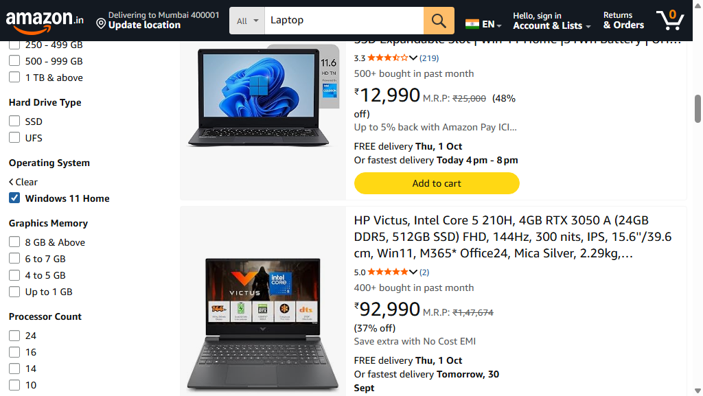
-
verifyingMobilePhonePrimaryCameraResolutionFilterFunctionality_Laptop_23-05-46
11:05:48 PM / 00:00:06:086 Pass
verifyingMobilePhonePrimaryCameraResolutionFilterFunctionality_Laptop_23-05-46
09.28.2026 11:05:48 PM 09.28.2026 11:05:54 PM 00:00:06:086 · #test-id=28Status Timestamp Details Info 11:05:48 PM Test Input Parameter: Laptop Pass 11:05:54 PM Test Passed Info 11:05:54 PM 📂 Logs: Info 11:05:54 PM 📄 verifyingMobilePhonePrimaryCameraResolutionFilterFunctionality_Laptop_23-05-46.log -
verifyingMobilePhonePrimaryCameraResolutionFilterFunctionality_Tablet_23-05-54
11:05:56 PM / 00:00:08:228 Pass
verifyingMobilePhonePrimaryCameraResolutionFilterFunctionality_Tablet_23-05-54
09.28.2026 11:05:56 PM 09.28.2026 11:06:04 PM 00:00:08:228 · #test-id=29Status Timestamp Details Info 11:05:56 PM Test Input Parameter: Tablet Pass 11:06:04 PM Test Passed Info 11:06:04 PM 📂 Logs: Info 11:06:04 PM 📄 verifyingMobilePhonePrimaryCameraResolutionFilterFunctionality_Tablet_23-05-54.log -
verifyingPriceSilderFunctionality_Mobile_23-06-04
11:06:06 PM / 00:00:12:631 Fail
verifyingPriceSilderFunctionality_Mobile_23-06-04
09.28.2026 11:06:06 PM 09.28.2026 11:06:19 PM 00:00:12:631 · #test-id=30Status Timestamp Details Skip 11:06:19 PM Test Skipped Fail 11:06:19 PM Info 11:06:19 PM 📂 Logs: Info 11:06:19 PM 📄 verifyingPriceSilderFunctionality_Mobile_23-06-04.log Info 11:06:19 PM 📸 Screenshots: Info 11:06:19 PM Info 11:06:19 PM 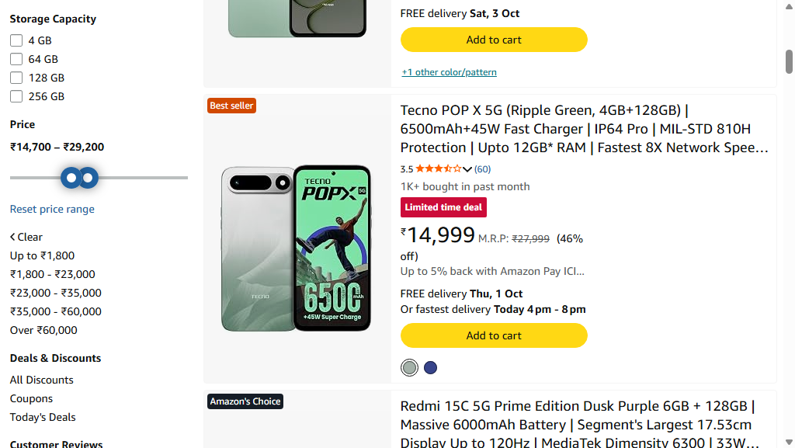
-
verifyingPriceSilderFunctionality_Mobile_23-06-20
11:06:22 PM / 00:00:20:013 Fail
verifyingPriceSilderFunctionality_Mobile_23-06-20
09.28.2026 11:06:22 PM 09.28.2026 11:06:42 PM 00:00:20:013 · #test-id=31Status Timestamp Details Fail 11:06:42 PM Info 11:06:42 PM 📂 Logs: Info 11:06:42 PM 📄 verifyingPriceSilderFunctionality_Mobile_23-06-20.log Info 11:06:42 PM 📸 Screenshots: Info 11:06:42 PM Info 11:06:42 PM 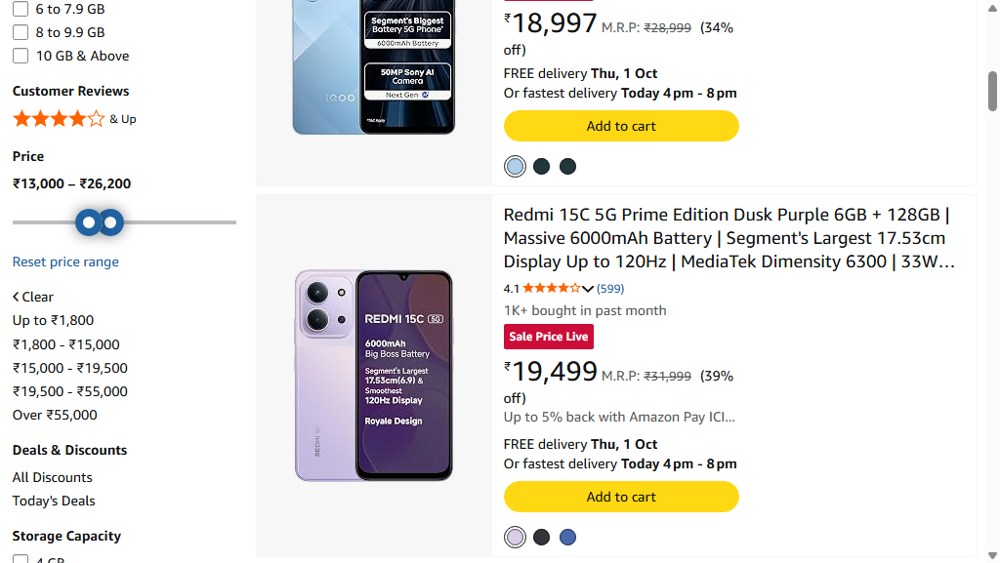
Info 11:06:42 PM 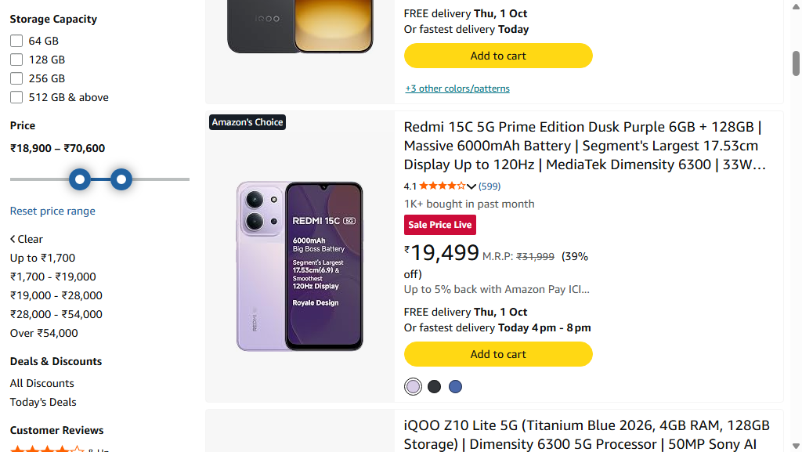
Info 11:06:42 PM 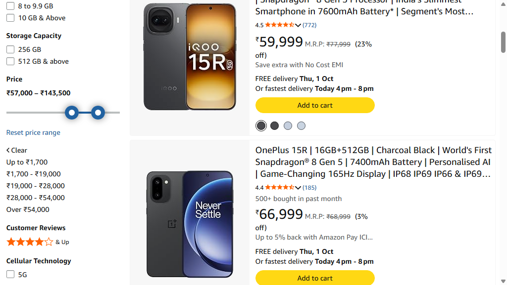
-
verifyingPriceSilderFunctionality_Laptop_23-06-43
11:06:44 PM / 00:00:08:069 Pass
verifyingPriceSilderFunctionality_Laptop_23-06-43
09.28.2026 11:06:44 PM 09.28.2026 11:06:52 PM 00:00:08:069 · #test-id=32Status Timestamp Details Pass 11:06:52 PM Test Passed Info 11:06:52 PM 📂 Logs: Info 11:06:52 PM 📄 verifyingPriceSilderFunctionality_Laptop_23-06-43.log Info 11:06:52 PM 📸 Screenshots: Info 11:06:52 PM -
verifyingPriceSilderFunctionality_Tablet_23-06-52
11:06:54 PM / 00:00:15:543 Pass
verifyingPriceSilderFunctionality_Tablet_23-06-52
09.28.2026 11:06:54 PM 09.28.2026 11:07:10 PM 00:00:15:543 · #test-id=33Status Timestamp Details Pass 11:07:10 PM Test Passed Info 11:07:10 PM 📂 Logs: Info 11:07:10 PM 📄 verifyingPriceSilderFunctionality_Tablet_23-06-52.log Info 11:07:10 PM 📸 Screenshots: Info 11:07:10 PM Info 11:07:10 PM 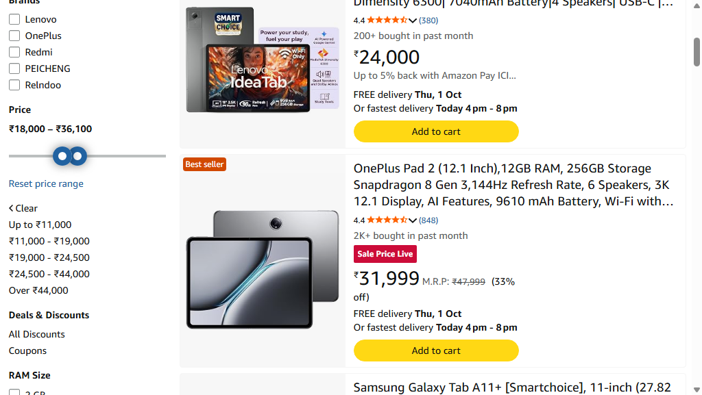
Info 11:07:10 PM 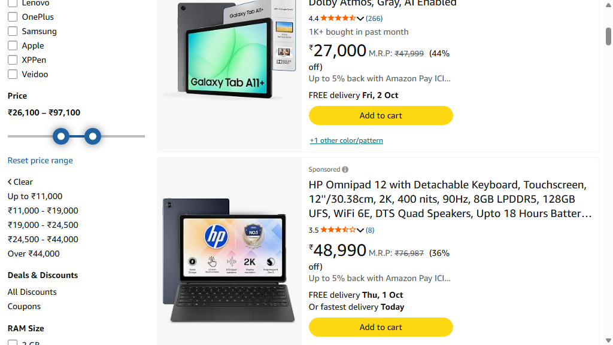
Info 11:07:10 PM 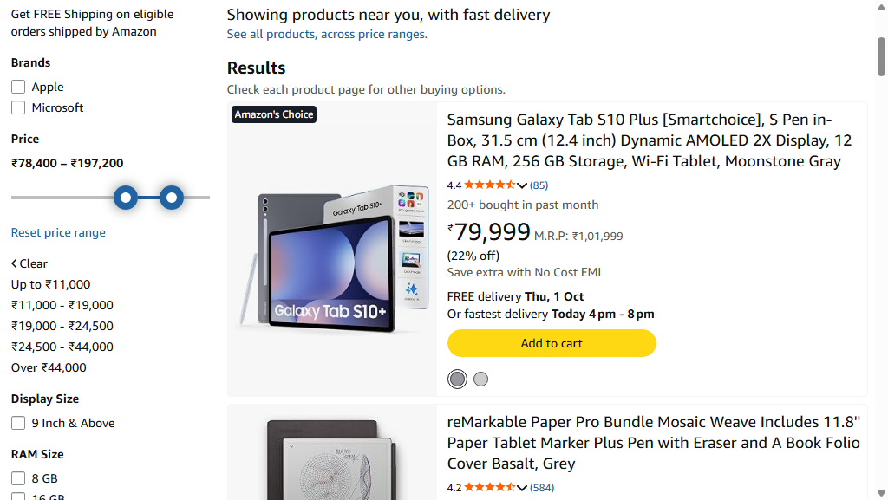
-
verifyingProcessorSpeedFilterFunctionality_Mobile_23-07-10
11:07:12 PM / 00:08:33:242 Fail
verifyingProcessorSpeedFilterFunctionality_Mobile_23-07-10
09.28.2026 11:07:12 PM 09.28.2026 11:15:45 PM 00:08:33:242 · #test-id=34Status Timestamp Details Info 11:07:12 PM Test Input Parameter: Mobile Fail 11:15:45 PM Info 11:15:45 PM 📂 Logs: Info 11:15:45 PM 📄 verifyingProcessorSpeedFilterFunctionality_Mobile_23-07-10.log Info 11:15:45 PM 📸 Screenshots: Info 11:15:45 PM 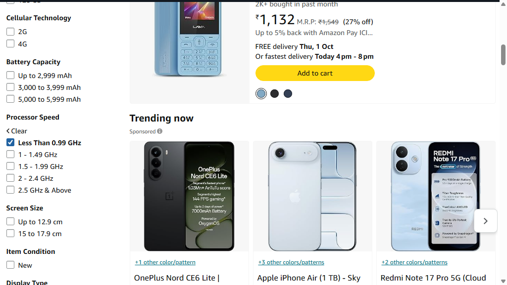
Info 11:15:45 PM 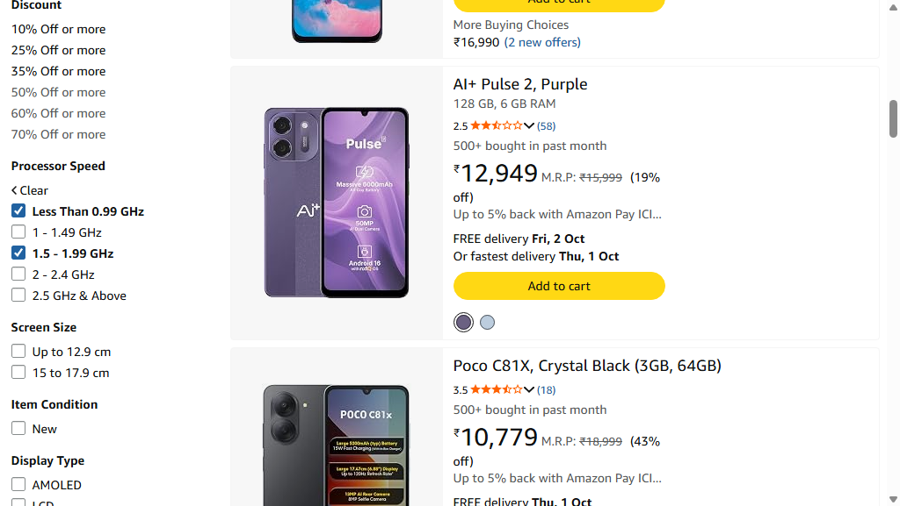
Info 11:15:45 PM 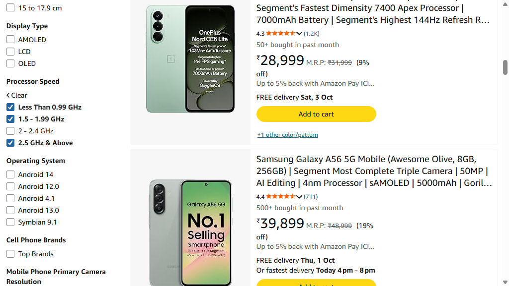
-
verifyingOperatingSystemVersionFilterFunctionality_Tablet_23-07-23
11:07:25 PM / 00:24:12:199 Fail
verifyingOperatingSystemVersionFilterFunctionality_Tablet_23-07-23
09.28.2026 11:07:25 PM 09.28.2026 11:31:37 PM 00:24:12:199 · #test-id=35Status Timestamp Details Info 11:07:25 PM Test Input Parameter: Tablet Fail 11:31:37 PM Info 11:31:37 PM 📂 Logs: Info 11:31:37 PM 📄 verifyingOperatingSystemVersionFilterFunctionality_Tablet_23-07-23.log Info 11:31:37 PM 📸 Screenshots: Info 11:31:37 PM 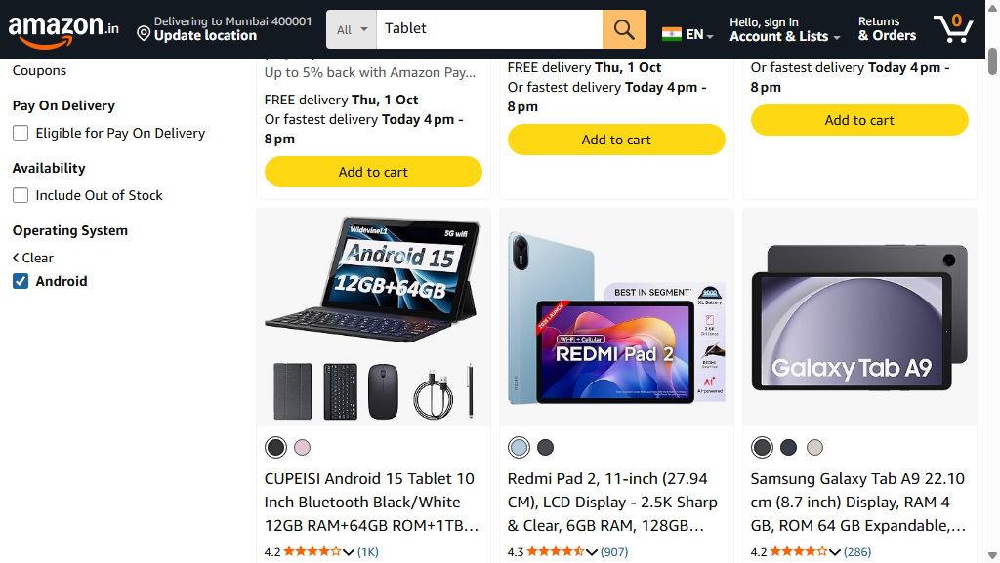
Info 11:31:37 PM 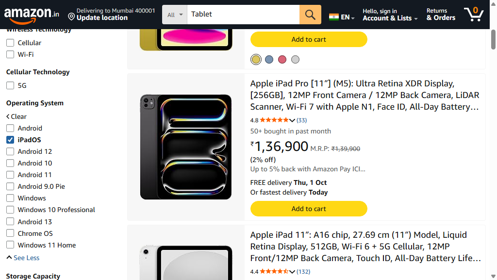
Info 11:31:37 PM 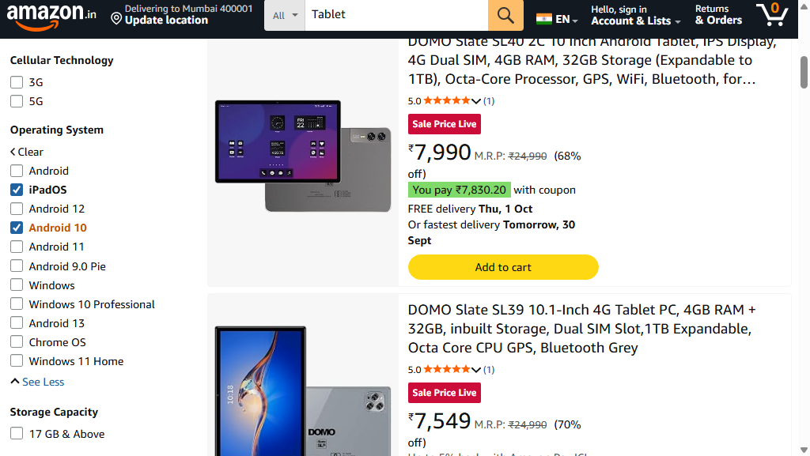
Info 11:31:37 PM 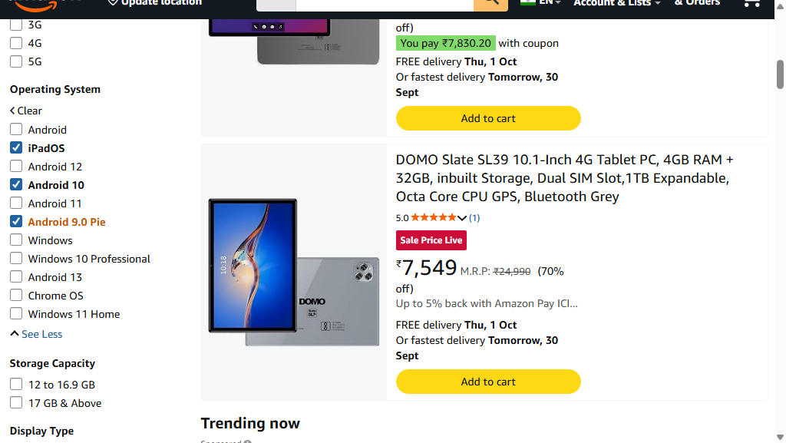
Info 11:31:37 PM 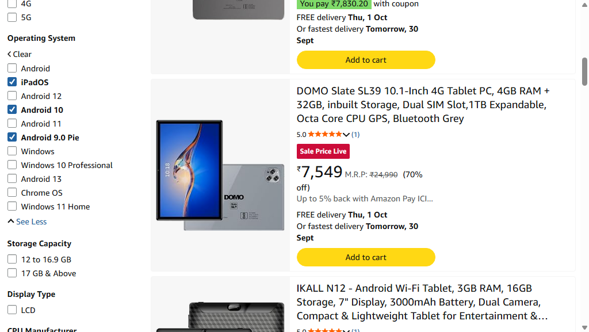
Info 11:31:37 PM 
Info 11:31:37 PM 
Info 11:31:37 PM Info 11:31:37 PM 
Info 11:31:37 PM Info 11:31:37 PM 
Info 11:31:37 PM 
Info 11:31:37 PM 
Info 11:31:37 PM 
Info 11:31:37 PM Info 11:31:37 PM -
verifyingStorageCapacityFilterFunctionality_Mobile_23-10-04
11:10:06 PM / 00:04:45:121 Fail
verifyingStorageCapacityFilterFunctionality_Mobile_23-10-04
09.28.2026 11:10:06 PM 09.28.2026 11:14:51 PM 00:04:45:121 · #test-id=36Status Timestamp Details Info 11:10:06 PM Test Input Parameter: Mobile Fail 11:14:51 PM Info 11:14:51 PM 📂 Logs: Info 11:14:51 PM 📄 verifyingStorageCapacityFilterFunctionality_Mobile_23-10-04.log Info 11:14:51 PM 📸 Screenshots: Info 11:14:51 PM Info 11:14:51 PM -
verifyingStorageCapacityFilterFunctionality_Laptop_23-14-53
11:14:55 PM / 00:00:13:768 Pass
verifyingStorageCapacityFilterFunctionality_Laptop_23-14-53
09.28.2026 11:14:55 PM 09.28.2026 11:15:08 PM 00:00:13:768 · #test-id=37Status Timestamp Details Info 11:14:55 PM Test Input Parameter: Laptop Pass 11:15:08 PM Test Passed Info 11:15:08 PM 📂 Logs: Info 11:15:08 PM 📄 verifyingStorageCapacityFilterFunctionality_Laptop_23-14-53.log -
verifyingStorageCapacityFilterFunctionality_Tablet_23-15-09
11:15:11 PM / 00:14:53:489 Fail
verifyingStorageCapacityFilterFunctionality_Tablet_23-15-09
09.28.2026 11:15:11 PM 09.28.2026 11:30:05 PM 00:14:53:489 · #test-id=38Status Timestamp Details Info 11:15:11 PM Test Input Parameter: Tablet Fail 11:30:05 PM Info 11:30:05 PM 📂 Logs: Info 11:30:05 PM 📄 verifyingStorageCapacityFilterFunctionality_Tablet_23-15-09.log Info 11:30:05 PM 📸 Screenshots: Info 11:30:05 PM Info 11:30:05 PM Info 11:30:05 PM -
verifyingProcessorSpeedFilterFunctionality_Laptop_23-15-46
11:15:49 PM / 00:18:14:215 Fail
verifyingProcessorSpeedFilterFunctionality_Laptop_23-15-46
09.28.2026 11:15:49 PM 09.28.2026 11:34:03 PM 00:18:14:215 · #test-id=39Status Timestamp Details Info 11:15:49 PM Test Input Parameter: Laptop Fail 11:34:03 PM Info 11:34:03 PM 📂 Logs: Info 11:34:03 PM 📄 verifyingProcessorSpeedFilterFunctionality_Laptop_23-15-46.log Info 11:34:03 PM 📸 Screenshots: Info 11:34:03 PM Info 11:34:03 PM Info 11:34:03 PM Info 11:34:03 PM Info 11:34:03 PM -
verifyingTheBrandsFilterFunctionality_Mobile_23-30-07
11:30:09 PM / 00:01:35:227 Fail
verifyingTheBrandsFilterFunctionality_Mobile_23-30-07
09.28.2026 11:30:09 PM 09.28.2026 11:31:44 PM 00:01:35:227 · #test-id=40Status Timestamp Details Info 11:30:09 PM Test Input Parameter: Mobile Fail 11:31:44 PM Info 11:31:44 PM 📂 Logs: Info 11:31:44 PM 📄 verifyingTheBrandsFilterFunctionality_Mobile_23-30-07.log Info 11:31:44 PM 📸 Screenshots: Info 11:31:44 PM Info 11:31:44 PM Info 11:31:44 PM -
verifyingTheBrandsFilterFunctionality_Laptop_23-31-45
11:31:46 PM / 00:01:12:810 Pass
verifyingTheBrandsFilterFunctionality_Laptop_23-31-45
09.28.2026 11:31:46 PM 09.28.2026 11:32:59 PM 00:01:12:810 · #test-id=41Status Timestamp Details Info 11:31:46 PM Test Input Parameter: Laptop Pass 11:32:59 PM Test Passed Info 11:32:59 PM 📂 Logs: Info 11:32:59 PM 📄 verifyingTheBrandsFilterFunctionality_Laptop_23-31-45.log Info 11:32:59 PM 📸 Screenshots: Info 11:32:59 PM Info 11:32:59 PM Info 11:32:59 PM -
verifyingTheBrandsFilterFunctionality_Tablet_23-32-59
11:33:01 PM / 00:01:15:785 Pass
verifyingTheBrandsFilterFunctionality_Tablet_23-32-59
09.28.2026 11:33:01 PM 09.28.2026 11:34:17 PM 00:01:15:785 · #test-id=42Status Timestamp Details Info 11:33:01 PM Test Input Parameter: Tablet Pass 11:34:17 PM Test Passed Info 11:34:17 PM 📂 Logs: Info 11:34:17 PM 📄 verifyingTheBrandsFilterFunctionality_Tablet_23-32-59.log Info 11:34:17 PM 📸 Screenshots: Info 11:34:17 PM Info 11:34:17 PM Info 11:34:17 PM -
verifyingProcessorSpeedFilterFunctionality_Tablet_23-34-05
11:34:08 PM / 00:00:05:617 Pass
verifyingProcessorSpeedFilterFunctionality_Tablet_23-34-05
09.28.2026 11:34:08 PM 09.28.2026 11:34:13 PM 00:00:05:617 · #test-id=43Status Timestamp Details Info 11:34:08 PM Test Input Parameter: Tablet Pass 11:34:13 PM Test Passed Info 11:34:13 PM 📂 Logs: Info 11:34:13 PM 📄 verifyingProcessorSpeedFilterFunctionality_Tablet_23-34-05.log
-
java.lang.AssertionError
19 tests
java.lang.AssertionError
19 failed -
org.openqa.selenium.StaleElementReferenceException
1 tests
org.openqa.selenium.StaleElementReferenceException
1 failedStatus Timestamp TestName Fail 23:06:06 PM verifyingPriceSilderFunctionality_Mobile_23-06-04
Started
Sep 28, 2026 10:39:08 PM
Ended
Sep 28, 2026 11:34:18 PM
Tests Passed
23
Tests Failed
20
Tests
Log events
Timeline